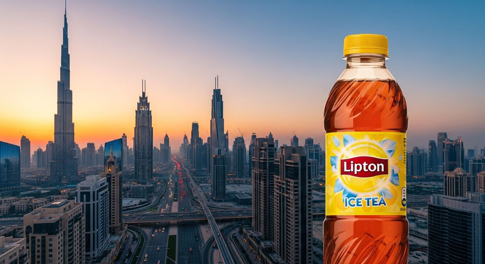

Bottler 01 · Jebel Ali Plant
Dubai· UAE
1.8M cases / year
Filtered Jebel Ali desalinated water. The slightly mineral profile leans the tea brighter; we dial sugar down 8% versus the global recipe. The bottle opens at 42°C outside — so cap pressure is tuned 1.2× the global spec.